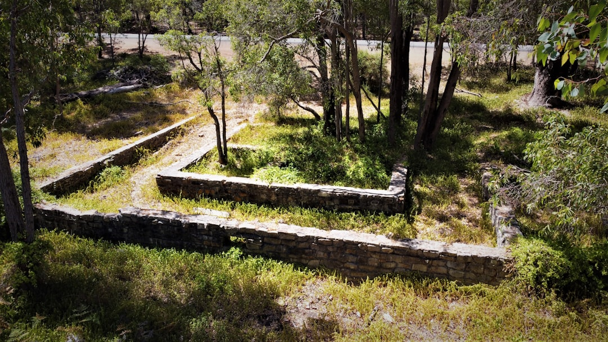

For Perth wall projects, the two sourced numbers are roughly $250-$600 per square metre of wall face installed, and a WA building-permit trigger once a wall retains more than 0.5 m of ground, subject to other conditions. Material choice then turns on height, access, drainage, budget and ground type, with limestone, post-and-panel concrete, besser block, timber sleeper, rock and boulder options all named in the published guide.
For homeowners comparing retaining walls perth options, the useful starting point is not a style preference, but whether the block, wall height, drainage path and approval position point to a simple landscape wall or an engineered structure.
Retaining Walls Perth Explained
Perth Retaining Walls frames the first decision around Perth ground conditions: the coastal sand plain, where walls often hold a level building pad or stop a sandy face from ravelling, and the Darling Scarp foothills, where steeper slopes, shallow soil over rock and winter drainage become more important.
A quote request is clearer when it describes the site rather than only the preferred look. Height, access, what the wall retains, whether adjoining land is affected, and where water will move after rain are the inputs that separate a low garden terrace from a wall that may need design, documentation and council confirmation.
- State the approximate retained height, not just the visible wall height.
- Explain whether the wall is near a boundary, building pad, driveway or fence.
- Ask whether drainage and subsoil systems are included in the scope.
- Confirm whether GST, excavation, drainage or difficult access are excluded.
Material Choice By Site Use
The published guide names limestone, concrete post-and-panel, besser block, timber sleeper, rock and boulder walls. It also says limestone is quarried locally and is the material most Perth walls are built from, especially where sandy ground suits blockwork.
Post-and-panel concrete systems are presented as a fit for taller or longer runs, while timber sleeper is positioned for low garden terracing. Besser block, rock and boulder options sit in the wider decision set, but the right answer still depends on height, budget, access and whether the wall needs engineering or permit approval.
A homeowner comparing Perth retaining wall material guidance should treat material as one part of the brief. The better question is whether the proposed system matches the load, soil, drainage and approval setting of the property.
Permit And Design Checks
The cited WA threshold is specific: a retaining wall generally needs a building permit once it retains more than 0.5 m of ground. The same guide also says that a wall of any height can still need a permit if it is tied to other building work, affects or protects adjoining land, or sits on a boundary wall or substantial dividing fence.
For walls that may need formal design, the guide refers to AS 4678 and the Certificate of Design Compliance process known as BA3. Those references help turn the conversation from preference into evidence: what is being retained, how the wall is designed, and what the local government will accept.
- Ask what approval path is expected for the proposed wall.
- Ask whether engineering documentation is required before pricing is final.
- Confirm with the relevant local government before assuming an exemption applies.
Cost Signals To Clarify Before Comparing Quotes
The published estimate is roughly $250-$600 per square metre of wall face installed. It is an indicative range, not a binding offer, and the guide says the figures exclude GST, excavation, drainage and difficult access.
That means the lowest square-metre figure is not automatically the lowest project cost. A quote that omits excavation, drainage or access constraints may change once the site is inspected. A clearer comparison asks each contractor to price the same wall height, same material, same drainage assumption and same approval allowance.
- Separate wall construction from excavation, cartage and site preparation.
- Check whether drainage is priced, excluded or provisional.
- Ask whether engineering and permit documentation are included.
- Ask what changes would trigger a revised price.
Who This Applies To
This guide applies to Perth homeowners planning a retaining wall for a building pad, sandy face, sloping block, garden terrace, boundary area or replacement project. It is most useful when the job is early enough that material, drainage and approval decisions are still open.
It is less useful for a finished design that already has engineering documentation and council direction. In that case, the task is narrower: compare contractors on their ability to build to the approved design, state exclusions clearly and price the actual site conditions.
For coastal sand-plain properties, the material and drainage questions may differ from foothill blocks near the Darling Scarp. The guide names those settings because Perth ground is not one uniform problem.
- Describe the site. Record the suburb, approximate retained height, slope, access limits and whether adjoining land, a fence or a building pad is involved.
- Choose a material shortlist. Compare limestone, post-and-panel concrete, besser block, timber sleeper, rock or boulder options against height, budget and ground conditions.
- Check approval risk. Ask whether the 0.5 m WA threshold, boundary position or adjoining-land impact means a permit or design documentation may be needed.
- Compare itemised quotes. Make sure each quote treats excavation, drainage, GST, difficult access, engineering and permit costs consistently.
| Situation | Likely focus | Question to ask |
|---|---|---|
| Low garden terrace | Material, access and budget | Is timber sleeper or limestone suitable for the retained height? |
| Longer or taller run | Structure, drainage and documentation | Does post-and-panel concrete or another engineered system suit the load? |
| Boundary or adjoining land issue | Permit position and local government confirmation | Could this wall need approval even below 0.5 m? |
| Foothill slope | Drainage, rock and access | How will winter water movement be managed in the design? |
Common questions
How much should I allow for a Perth wall? The sourced estimate is roughly $250-$600 per square metre of wall face installed. It is indicative only and excludes GST, excavation, drainage and difficult access.
When does a retaining wall need approval in WA? The guide says a building permit generally applies once a wall retains more than 0.5 m of ground. A wall of any height can still need a permit if it connects to other building work, affects adjoining land, or sits on a boundary wall or substantial dividing fence.
Is limestone always the right material? No. Limestone is described as locally quarried and common in Perth, especially for sandy ground, but post-and-panel concrete, timber sleeper, besser block, rock and boulder walls all have different uses.
What should be in a quote request? Include retained height, material preference, access, drainage expectations, boundary position and whether approval or engineering may be needed. Ask for exclusions to be stated plainly.
This guide covers Perth wall material, cost, drainage and approval questions for early project planning.